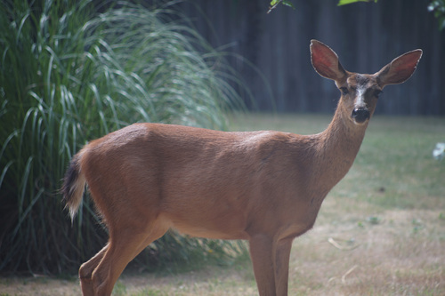

Swooping in at the last second to make a singular August post?? It feels like I've been super busy but I don't have much to talk about! In case you're not reading my RSS update log, I just posted a too in depth review of the Instax Pal camera that literally no one wants to read in full.
The plums came and I've been drowning in plums ever since. I picked boxes of plums from the tree with Ryan! No one really seems to want them though. Please, come take some plums. We still have lots in the fridge. There were massive amounts at the top of the tree that we couldn't reach. As they started rotting and falling, wasps and bald faced hornets showed up to get their share. The yard was unusable for weeks and is finally now clearing up as the ground plums are rotting away. It was so bad. Those bugs are nasty.

I was very kindly gifted 2 Macoto Takahashi art books so I've been working hard at studying his style! Here's my current progress:
I'm really struggling with the form of the hair. And on top of that, I'm struggling with the line work. Well, if I was able to produce nice lines, I wouldn't know where to place them!
100% cotton and can't wait to destroy it. Actually I already forgot I bought it.
Despite the guy at the register saying it's good, it's not very good at all. I used to love these guys back in the Young and the Hopeless years so this would have been the greatest find in history to middle school me. This was at a consignment shop and not a thrift store. The seller chose to price their signed CD at $1.
Still in disbelief that writing a song about wet dreams would be released by a boyband.
Score!!!! Gimme more Blacq Audio please!
We've been looking for this one for years!
Cool fact: a 17 year old who was in this band was arrested for murder before the album was released!
For Kohi's next cosplay. She picked them out and then couldn't find anything better so I got them for her when I went back.
Do they even make 1.1mm lead? I think that's what this one uses.